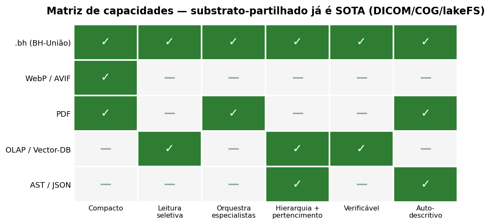
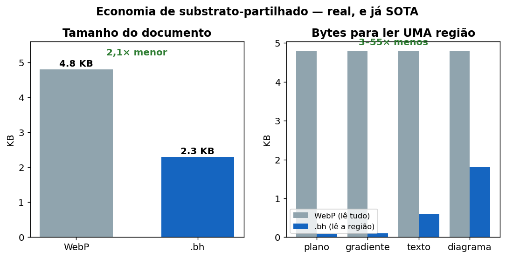
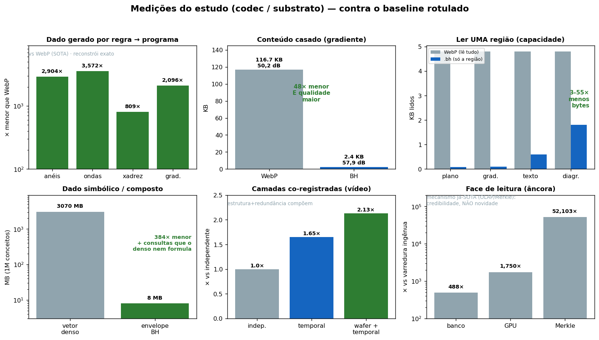

Bits Hierárquicos — Pitch Visual (gráficos comparativos)
Uma estrutura que representa um ativo heterogêneo, navega por partes dele sem carregar tudo, e delega cada região ao melhor formato especialista.
0. O modelo, numa imagem
A propriedade distintiva (FCIR) num único diagrama: interpretações rivais co-registadas sobre um substrato imutável, com a adjudicação diferida para uma escolha opcional no momento da leitura.

Os gráficos abaixo medem a economia de substrato-partilhado — real, mas (a varredura mostrou) já SOTA maduro. O diagrama acima é a parte que distingue o BH; trata os gráficos como evidência de apoio, não como o destaque.
1. Matriz de capacidades — substrato-partilhado (já SOTA)
Cada formato de hoje cobre só um pedaço. O .bh é o único que une todas as
capacidades numa estrutura só.

WebP/AVIF → compacto, mas leitura única, sem orquestração nem hierarquia
PDF → orquestra e é auto-descritivo, mas lista plana, sem leitura seletiva
OLAP/V-DB → leitura seletiva e hierarquia, mas não é formato de representação
AST/JSON → estrutura explícita, mas não compacto nem orquestra
.bh → TODAS as capacidades, num envelope
2. Economia de substrato-partilhado — real, e já SOTA
Não é "ou compacto ou navegável". É os dois, medido contra o WebP num documento estruturado.

- 2,1× menor que o WebP (cada região no formato que lhe convém).
- 3–55× menos bytes para ler qualquer região — o WebP decodifica o arquivo
inteiro para qualquer pedaço; o
.bhlê só o ramo pedido.
3. Onde rende e onde delega (a fronteira honesta)
O BH não é mágica universal. Ele rende onde o dado é estrutura e delega onde é sinal denso.

ESTRUTURA (ganha) Procedural 2.904–3.572× · Simbólico 384× ·
Documento 2,1×
LEITURA SELETIVA (âncora) ~100×, mas é mecanismo já existente (OLAP/Merkle):
credibilidade, não novidade
SINAL DENSO (delega) Foto natural: o WebP/AVIF ganha — o BH o convoca,
não compete
A fronteira não é a entropia do sinal — é o reconhecimento da estrutura.
4. As medições, uma a uma (onde o BH foi superior, e contra quê)
Cada teste real, com o ganho e o baseline rotulado — a honestidade visível: verde onde ganha vs estado da arte, cinza onde é âncora (mecanismo já-SOTA).

Dado gerado por regra → programa ... 800–3.572× menor que WebP (reconstrói exato)
Conteúdo casado (gradiente) ........ 48× menor que WebP, com qualidade MAIOR
Ler uma região (capacidade) ........ 3–55× menos bytes que o WebP
Dado simbólico / composto .......... 384× menor + consultas que o denso nem formula
Camadas co-registradas (vídeo) ..... 2,13× (estrutura + redundância compõem)
Face de leitura (âncora) ........... 488–52.103× vs ingênuo — mas é OLAP/Merkle,
credibilidade, NÃO novidade
A leitura dos três gráficos, junta
- Gráfico 1 mostra o QUÊ: uma estrutura que faz o que hoje exige quatro.
- Gráfico 2 mostra a PROVA: menor E navegável, no mesmo arquivo, vs SOTA.
- Gráfico 3 mostra a HONESTIDADE: onde rende (estrutura) e onde delega (sinal) — a credibilidade que faz um engenheiro confiar.
O valor não está no bloco comprimido. Está na estrutura que sabe o que aquele bloco significa.
Gráficos gerados por pitch_assets/generate_charts.py a partir das medições
reais do estudo (ver BH_MASTER.md). PNGs em pitch_assets/.